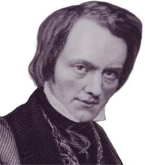
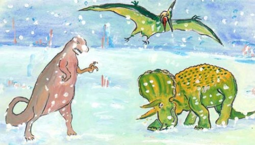
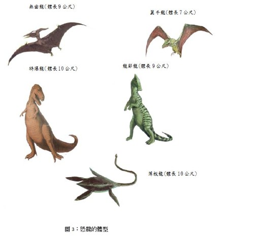

恐龍

圖1：理查·歐文爵士（Richard Owen，1804年7月20日－1892年12月18日）是一位英國生物學家、比較解剖學家與古生物學家。是皇家學會成員，曾對許多脊椎動物進行分類與命名。
恐龍(Dinosaur) 這個名詞，最早是由英國解剖古生物學家理查歐文 (Richard Owen；圖1) 在1842 年提出的。他根據希臘字首deinos (恐佈的) 以及字尾sauros (蜥蜴) 所訂出的名詞。意思是『恐怖的蜥蜴』，牠是陸地上曾經存在最大型的動物。屬於爬蟲類，開始於2億3000萬年前中生代的三疊紀（約2億4千8百萬到2億8百萬年前，通常所稱的恐龍時代，是中生代的第一個時期。），活躍於侏羅紀（約２億１千萬~１億４千萬年前，是中生代的第二個時期，在亞洲針葉樹和銀杏繁茂。）和白堊紀（約１億４０００萬~６５００萬年前是中生代的第三個時期。雖然恐龍不斷繁盛，但是在這個時代末期就都滅絕了。）然後在距今6500萬年前白堊紀晚期，突然迅速的消失，牠們在地球生活了1億6000多萬年，而我們人類的出現到現在也不只過幾百萬年而已。牠們的絕減至今仍是一個謎，沒有人知道確切的原因。
恐龍在牠們所生活的時代，是地球上最大、最主要的脊惟動物;有陸上走的、天上飛的、水中游的（圖3）。足跡遍布全世界，除了南極以外，都曾發現過恐龍的化石。世界上有記載最早發現的恐龍化石，是西元1818年在美國康乃狄克州一個山谷裹所發現的。此外在1820到1822年間，在英國牛津，也曾發現過一些恐龍牙齒和骨頭的化石。但是一直等到1825年，這些化石才被認定是一種未曾發現的動物殘骸。
後來世界各地又陸續發現了一些恐龍蛋和胚胎的化石，尤以1922年在蒙古戈壁沙漠中所發現的最為完整。這些發現足以證明恐龍是卵生的動物。在分類學上，恐龍屬於脊椎動物亞門、爬蟲綱中的鳥髖目和蜥髖目。屬於鳥髖目的恐龍骨骼類似鳥的骨架，而屬於蜥髖目恐龍則和蜥蝪相像。事實上，恐龍和後代的蜥蝪、鱷魚、鳥類等動物的前身都是近親。在恐龍1億6000萬歲月裏，共約有5000種不同的恐龍，曾經生活在不同的地區，不同的年代。它們並非全部體型都非常龐大，也有小到身長不到60公分的。恐龍可分草食性和肉食性兩種，通常草食性的恐龍如雷龍，牙齒都比較細小，體型也比較大，比較笨重，多半以四腳著地，生活在水邊的陸地;有些也因為體重太重而生活在沼澤裹，藉著浮力使行動較活潑。肉食性恐龍如暴龍，多半比較凶猛。有銳利的牙齒，體型也較輕小，大都以後腳著地行走;因為前肢退化得很小，祇能用來攫掠食物。他們的食物除了其他小動物以外，也吃草食性的恐龍。
恐龍滅種的原因，有待考證，也許因為缺乏食物，由於飢餓而自相殘殺;也許因為新生代氣候、地形的劇變，使他們難以適應等等。恐龍滅絕以後，哺乳類的急速發展，取替了恐龍的主宰地位。不過這些中生代大爬蟲的絕種，卻指示了一條非常重要的原理，就是:種的絕滅，在生物的演化上是非常重要的，它可以清除舊種，並替新種鋪路。恐龍一直獨霸著中生代大部分的陸上生活地區，可走等他們一旦遭到淘汰以後，原先並不得勢的哺乳類展開了新領域，進入輝煌時代。
有關恐龍的滅絕有三種說法：
1. 白堊紀是恐龍這個大家族「人丁興旺」的時期，當時氣候溫和，陸地上佈滿著湖沼，可供牠們食用的植物和動物也非常豐盛，牠們過著安安定定的生活，這樣生活適應方式和自己身體的構造，在漫長的年代中逐漸定型下來。然而到白堊紀末期，地球上發生了一件大事，那就是地殼上長出許多山來，沼澤也被毀滅了，這麼一來，牠就無法適應新環境。首先碰到的是，空氣既乾且熱，牠那僅僅只適於對付濕熱空氣的呼吸器官，實在無法對付;而由於氣候的改變，植物也少了，其在冬季時更成問題，食物起了恐慌。同時，鳥類和哺乳類動物，早已發展起來，牠們的腦子機靈，動作敏捷，又是溫血動物，便於適應周圍氣候變化。這對體軀粗重、行動遲緩而腦子又不發達恐龍，無論在搶奪食物等方面，決非鳥類和哺乳類的敵手，在這場激烈的生存鬥爭中，牠當然是注定失敗的。以上這些原因，就促使恐龍這一家族絕滅了。
2. 長久以來，人們常以為恐龍的滅絕是因為牠們行動緩慢和適應力差。但其實恐龍是相當敏捷，和具有發育相當好的腦。因此有人認為恐龍的滅絕，應與氣候不好有關，遇到地球發生大規模災難性的變化所導致的。
3. 最近另一種說法是因為巨大隕石撞到地球表面後，恐龍大量死亡，殘存恐龍也耐不了隕石撞到地球後，氣候驟然變成酷寒，也相繼死亡。
以上三點皆存在一個共同點，就是氣候變遷，恐龍無法渡過寒冬（圖2）。

圖2：恐龍在隕石撞到地球後，氣候驟然變成酷寒，相繼死亡。
